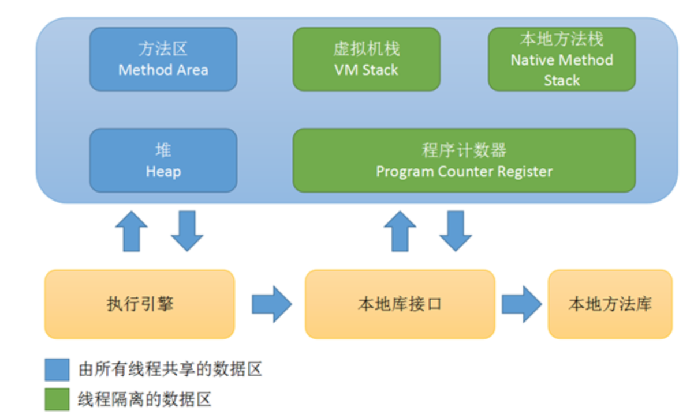

程序计数器
程序计数器（Program Counter Register） 是一块较小的内存空间，它可以看作是当前线程所执行的字节码的行号指示器。在虚拟机的概念模型里，字节码解释器工作时就是通过改变这个计数器的值来选取下一条执行字节码指令。每条线程都有一个独立的程序计数器。如果执行的是java方法，这个计数器记录的是正在执行的虚拟机字节码指令地址。如果是native方法，计数器为空。此内存区域是唯一一个在java虚拟机规范中没有规定任何OutOfMemoryError情况的区域。
Java虚拟机栈
- 对象引用
同样是线程私有，描述Java方法执行的内存模型：每个方法在执行的同时都会创建一个栈帧（Stack Frame）用于存储局部变量表、操作数栈、动态链接、方法出口等信息。一个方法对应一个栈帧。局部变量表存放了各种基本类型、对象引用和returnAddress类型（指向了一条字节码指令地址）。其中64位长度long 和 double占两个局部变量空间，其他只占一个。规定的异常情况有两种：1.线程请求的栈的深度大于虚拟机所允许的深度，将抛出StackOverflowError异常；2.如果虚拟机可以动态扩展，如果扩展时无法申请到足够的内存，就抛出OutOfMemoryError异常。
- 本地方法栈
和Java虚拟机栈很类似，不同的是本地方法栈为Native方法服务。
Java堆
是Java虚拟机所管理的内存中最大的一块。由所有线程共享，在虚拟机启动时创建。堆区唯一目的就是存放对象实例。 堆中可细分为新生代和老年代，再细分可分为Eden空间、From Survivor空间、To Survivor空间。 堆无法扩展时，抛出OutOfMemoryError异常
- 直接内存 并不是虚拟机运行时数据区的一部分，也不是Java虚拟机规范中定义的内存区域。 JDK1.4加入了NIO，引入一种基于通道与缓冲区的I/O方式，它可以使用Native函数库直接分配堆外内存，然后通过一个存储在Java堆中的DirectByteBuffer对象作为这块内存的引用进行操作。因为避免了在Java堆和Native堆中来回复制数据，提高了性能。 当各个内存区域总和大于物理内存限制，抛出OutOfMemoryError异常。